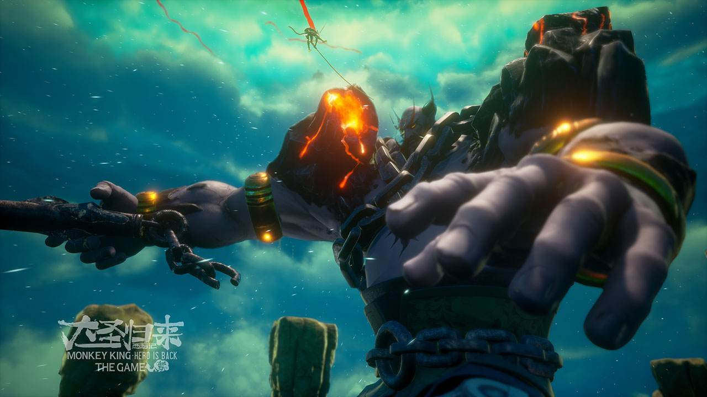

大圣归来同名游戏《大圣归来》,在游戏《大圣归来》中，玩家将要扮演大圣和江流儿进行冒险和打怪。游戏里将会再现《大圣归来》的情节，也加入了新的剧情，新的反派角色，也有很特别的关卡设计，制作方目前正在和日本团队一起努力，希望充分利用PS4的性能，让游戏画面达到，甚至超越电影的视觉效果。目前在Steam各大平台都有销售。
但是不管是相对简易的战斗系统，还是包括养成和冒险在内的玩法，《大圣归来》都将目光更多地放在了轻度玩家身上，这可能更多的还是目标受众的问题。导致游戏缺乏深度，耐玩性严重不足，整体较为平淡寡味，无怪乎一些资深的游戏玩家会对此颇有怨言。